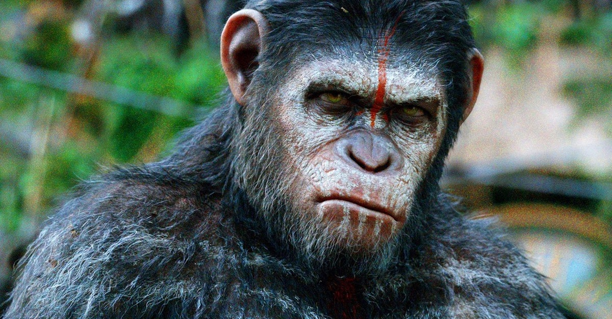

Caesar is a fictional leader in the acclaimed Planet of The Apes prequeals. He finished the trilogy more human than the humans trying to kill him.
Caesar and his friends
Caesar has amazing friends, his best friend is Maurice, a wise Orangutan. Click on the links below to read more about them: